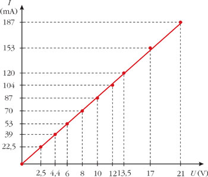

Az áramkörben folyó áram erőssége függ az alkalmazott áramforrás feszültségétől. Könnyen elvégezhető kísérlettel mérhetjük az áramkörbe kapcsolt fogyasztón a feszültséget és a feszültség hatására rajta átfolyó áram erősségét, és táblázatban vagy grafikonon is vizsgálhatjuk a feszültség-áramerősség függvényt!
Ábrázolva az áramerősséget a feszültség függvényében, egyenest kapunk. Ez azt mutatja, hogy az áramerősség egyenesen arányos a feszültséggel. Ezt a törvényszerűséget Georg Ohm német tudós határozta meg először: az áramkörbe kapcsolt fogyasztó sarkain mérhető feszültség, és a feszültség hatására a fogyasztón átfolyó áram erőssége egyenesen arányos, ha a fogyasztó hőmérséklete állandó.
